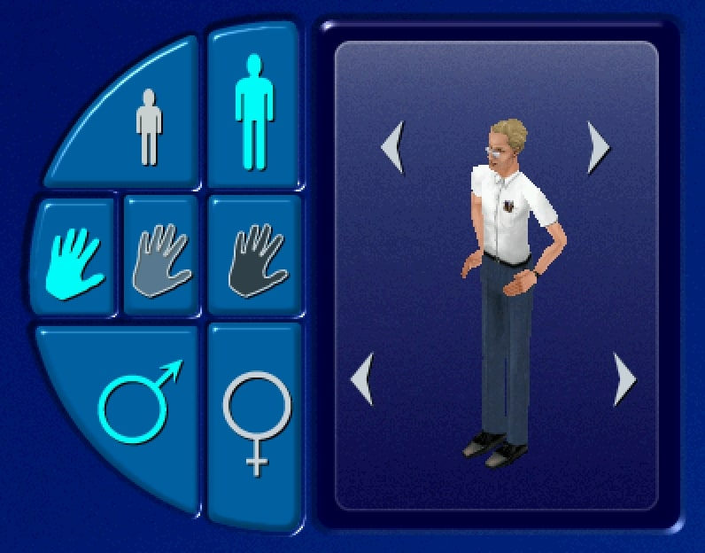

Technology’s potential for positive ramifications within the queer community are nearly limitless. New methods of gender exploration and expression are made feasible through various technological means: music, body modification, digital identities, character creation (ex. VRChat), and digital subcultures. At its best, technology can be considered a major pillar for the queer community.

Sims character customizer.
Technology’s potential for positive ramifications within the queer community are nearly limitless. New methods of gender exploration and expression are made feasible through various technological means: music, body modification, digital identities, character creation (ex. VRChat), and digital subcultures. At its best, technology can be considered a major pillar for the queer community.
Hyperpop, and other various forms of computer music provides musicians a way to truly “perform” gender. With the idolization of hyper-feminine ‘pop princesses’ setting the pace for desired womanhood, computer music offers a way for transfemme artists to express their gender in a way that is empowering for them.
Through virtual reality, humans are allowed to express their identity and gender in a way that was not previously allotted. Avatar creation, role-adoption, and various dynamic social interactions can all be a fulfilling form of gender expression. VR allows people to actualize the version of themselves both digitally and in reality, within some capacity. The virtual body can give people the confidence to reflect their preferred characteristics of their virtual self in real life. Or it can simply function as a form of escapism from the binary constraints in the real world.
Transhumanism underscores the simple fact that body modification is liberating for an individual. Whether it is done to express gender, some sort of group affiliation, occupation, or the acceptance or rejection of social norms, the ability to adjust the body to one’s liking in society transfers more power to the individual. Although we have this ability now, as technology advances our methods to “customize” our bodies, transhumanism offers a wider range of capabilities in this sense.
The ability to curate a digital environment or entity that mirrors one’s inner self sets the stage for a level of comfort that empowers people to really delve into their true self and exhibit those traits. In relation to gender, or queerness, this ease permits for a true expression of one’s self through digital means, as the limitations that exist within society can be evicted from a carefully curated online bubble.